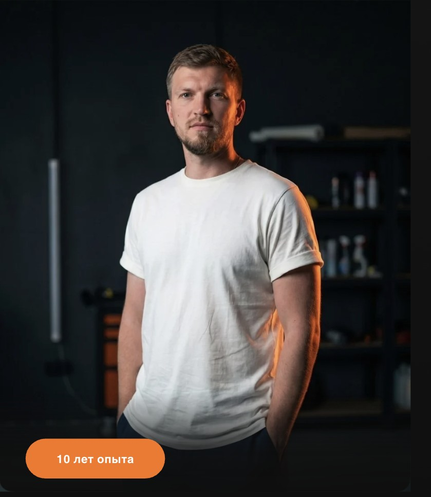

Это не одна услуга — это сотни направлений. Навык, который применяется везде, где есть стекло: в онлайн и оффлайн форматах.
Полировка, шлифовка и реставрация стекла нужна не только автомобилям — вот пять больших категорий спроса.
Оффлайн-курс (390 000 ₸) окупается на 10 объектах · Онлайн-курс (130 000 ₸) окупается на 4 объектах
Инструменты, пасты, абразивы, типы дефектов, материалы.
Разбор авто, защита кузова, оценка глубины повреждений, подготовка поверхности.
Разница процессов, удаление водного камня, удаление затёртостей.
Типы трещин, методы остановки, как можно остановить трещины.
Поиск клиентов, продвижение соц. сетей, скрипты продаж, личный бренд мастера.
Автостекло, триплекс, закалённое, ЖК и офисные стёкла, какие стёкла нельзя брать в работу.
Оценка дефекта, формирование цены, работа с возражениями.
Глубокие повреждения, работа со старыми стеклянными поверхностями, коммерческая реставрация.
● Акционные цены действуют при бронировании места

Мастер полировки стекла · 10 лет опыта
«Каждое стекло — новая задача. Одинаковых кейсов не бывает.»